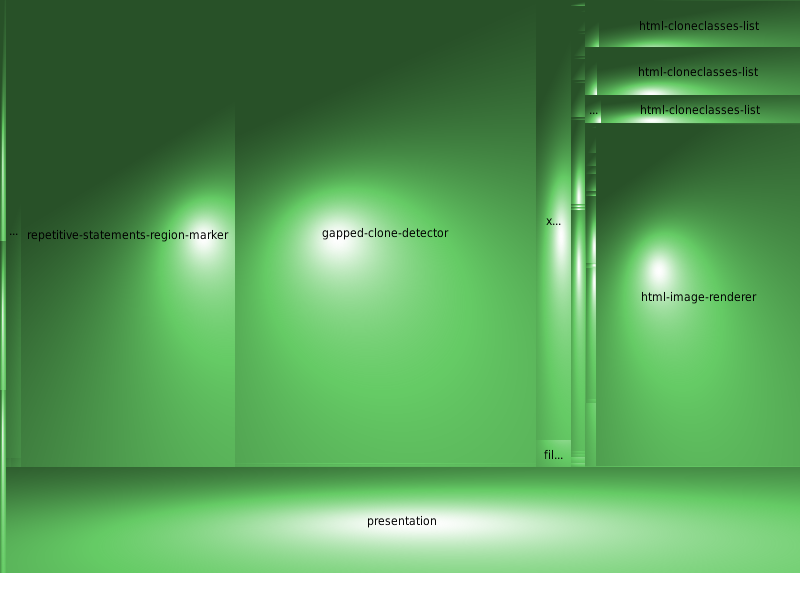

Execution Time (Info)
Execution Time Map (size is defined by execution time, color by processor status)
Execution Statistics
# processors disabled
13
# processors run successfully
106
# processors
119
Execution time [ms]
10.139
